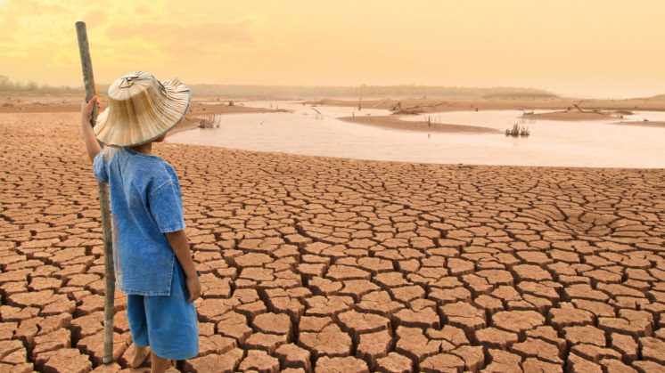
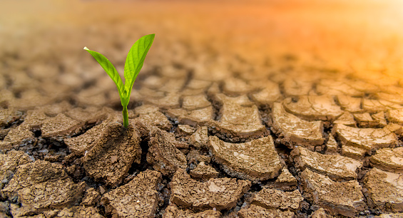
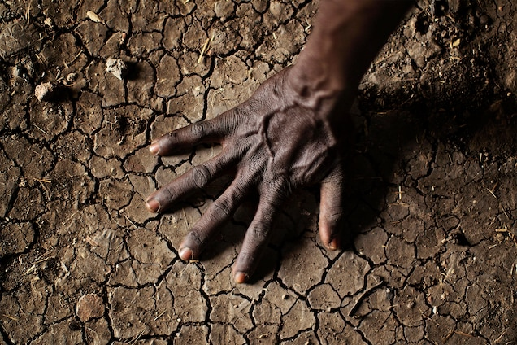
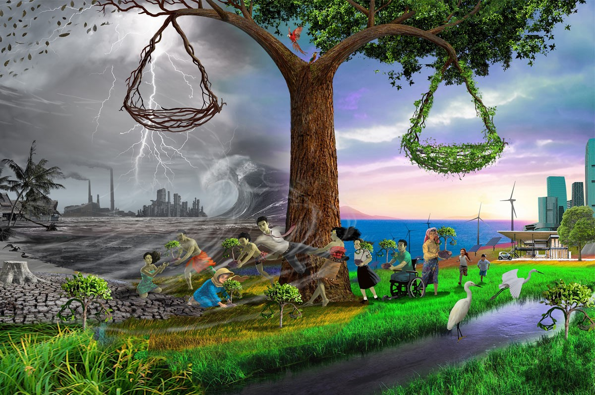

*Climate Change*
‹What is Global Warming and Climate Change?›
Global warming and climate change refer to an increase in average global temperatures. Natural events and human activities are believed to be contributing to an increase in average global temperatures. This is caused primarily by increases in greenhouse gases such as Carbon Dioxide (CO2). A warming planet thus leads to a change in climate which can affect weather in various ways, as discussed further below. Six main greenhouse gases are carbon dioxide (CO2), methane (CH4) (which is 20 times as potent a greenhouse gas as carbon dioxide) and nitrous oxide (N2O), plus three fluorinated industrial gases: hydrofluorocarbons (HFCs), perfluorocarbons (PFCs) and sulphur hexafluoride (SF6). Water vapor is also considered a greenhouse gas.
⋆The Greenhouse effect is natural. What do we have to do with it?⋆
Many of these greenhouse gases are actually life-enabling, for without them, heat would escape back into space and the Earth’s average temperature would be a lot colder. However, if the greenhouse effect becomes stronger, then more heat gets trapped than needed, and the Earth might become less habitable for humans, plants and animals. Carbon dioxide, though not the most potent of greenhouse gases, is the most significant one. Human activity has caused an imbalance in the natural cycle of the greenhouse effect and related processes. NASA’s Earth Observatory is worth quoting the effect human activity is having on the natural carbon cycle, for example...In addition to the natural fluxes of carbon through the Earth system, anthropogenic (human) activities, particularly fossil fuel burning and deforestation, are also releasing carbon dioxide into the atmosphere.
•The climate has always varied in the past. How is this any different?•
Throughout Earth’s history the climate has varied, sometimes considerably. Past warming does not automatically mean that today’s warming is therefore also natural. Recent warming has been shown to be due to human industrialization processes.NASA’s Goddard Institute of Space Studies (GISS) tracks atmospheric global temperature climate trends. As environmental engineer, D Kelly O’Day, explained on ProcessingTrends.com (link no longer available): To facilitate assessments of long term trends, climatologists compare the mean for a base period with the annual mean. Differences between the annual mean and baseline mean are called anomalies. GISS uses the 1951 - 1980 period for their baseline period. They use the difference between the annual mean and the baseline mean to determine the global temperature anomaly for the year.
⋇Who is most at risk of health effects due to climate change?⋇

Children are vulnerable for several reasons. For example, children are more susceptible to heat stress and dehydration and are more sensitive to exposure to air pollution and smoke from bushfires. Their immune systems are not fully developed, putting them at increased risk of infections. They often need to rely on adults to keep them safe during emergencies and help them to recover afterwards. People living in rural and remote areas, Aboriginal and Torres Strait Islander people, people on low incomes and other vulnerable populations are also at increased risk, in part due to inequalities in underlying health outcomes and limited accessibility of healthcare and other services. People living in rural or remote communities or along the coast are also at risk from extreme events such as bushfires, droughts, storms and sea level rises.
★Climate change will impact the lives of future generations★
There is no debate about this — climate change will most certainly impact the future generations. This global issue has the potential to take away everything we take for granted in this day and age. Our stable home will be flooded over. Our water will be dried out. Our crops won’t be able to grow because of the increased heat. Our oxygen will be limited as deforestation continues. Our air will be dirty due to pollution; and most importantly, our future family will have harder and shorter lives. If we don’t take immediate action against climate change, then this future may become both inevitable and irreversible. So think about it like this, although it may seem drastic, by contributing to climate change, you are actively destroying the lives of your future family.
★A Drier Future Sets the Stage for More Wildfires★
The Global climate change is predicted to change precipitation and evaporation patterns around the world, leading to wetter climate in some areas and drier in others. Areas that face increasingly severe droughts will also be at risk for more and larger fires. Some instruments monitor water in and below the soil, helping to assess whether areas are moving toward dangerous droughts. Others watch for heat and smoke from fires, supporting both research and active disaster recovery. Understanding how fires behave in dry conditions can help firefighters, first responders and others prepare for a hotter, drier future.
★Climate Change Facts and Effect on the Economy★
From 1980 to 2020, extreme weather cost $1.875 trillion. Consistently high costs related to extreme weather threaten to make insurance too expensive for most people. Munich Re, one of the world's largest reinsurance firms, blamed climate change for $24 billion of losses in the 2018 California wildfires alone. Of those losses, $18 billion were insured. If insurance companies continue to experience significant costs related to increasingly common extreme weather events, they may have to raise premiums to remain profitable.he negative effects of climate change are expected to be an ongoing drag on the global gross domestic product (GDP). A Stanford study in 2015 attempted to project climate change's impact on GDP, and they concluded that there was a 51% chance that climate change would reduce the world's GDP by more than 20%. That's comparable to the Great Depression, where GDP fell to -26.7%. The only difference is that, in the case of climate change effects, the GDP reduction would be permanent. The same Stanford study found that there was a 71% chance that climate change would have at least some negative impact on GDP.